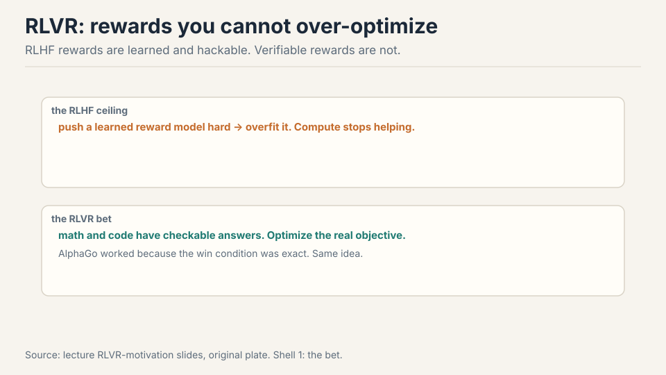
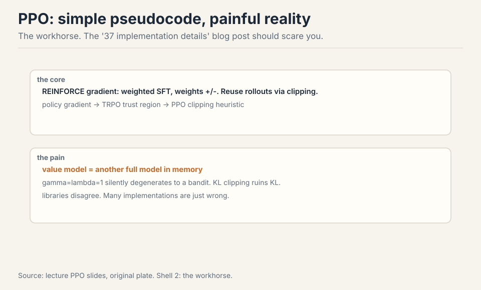
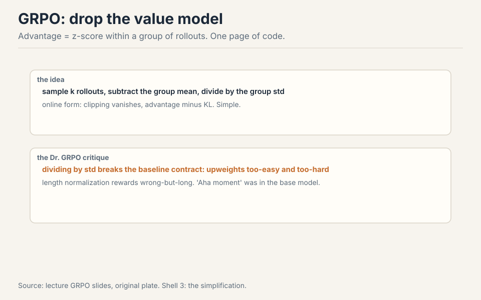
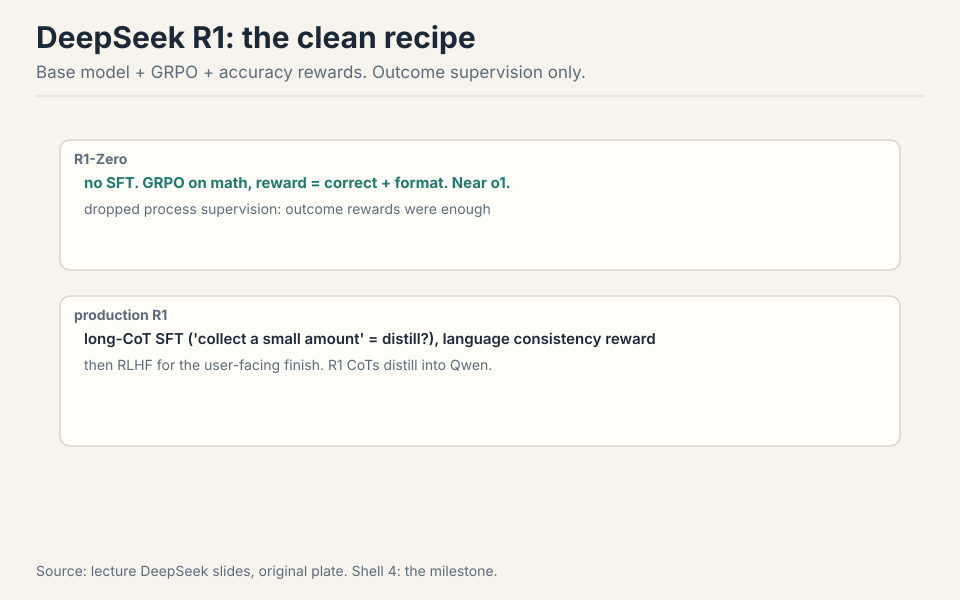
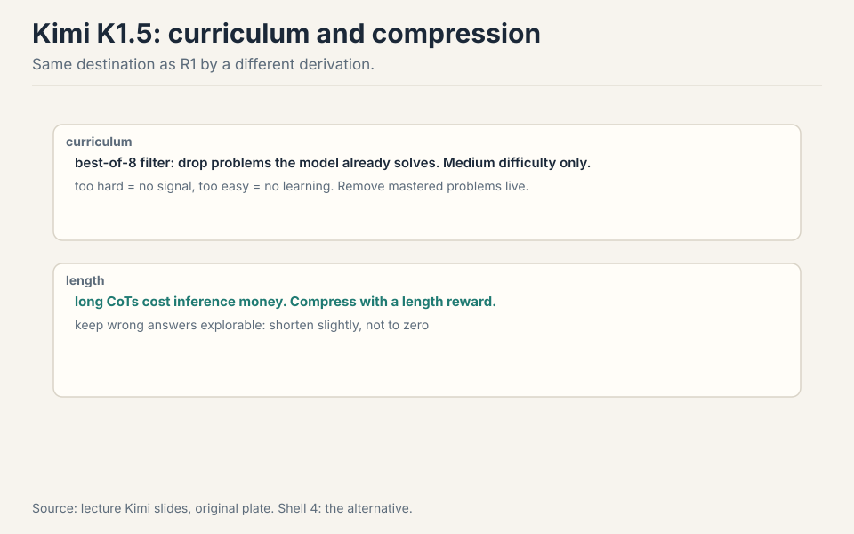
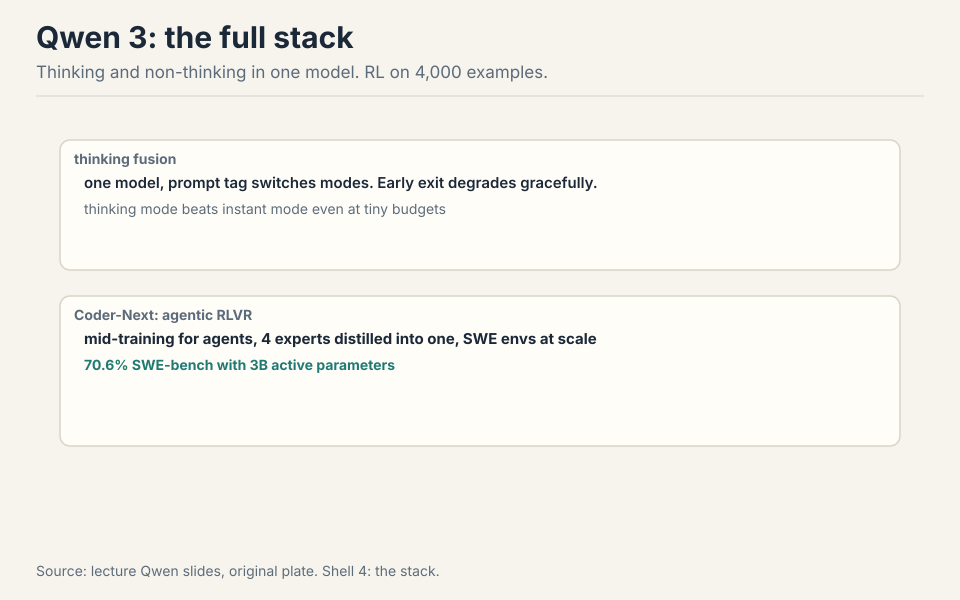
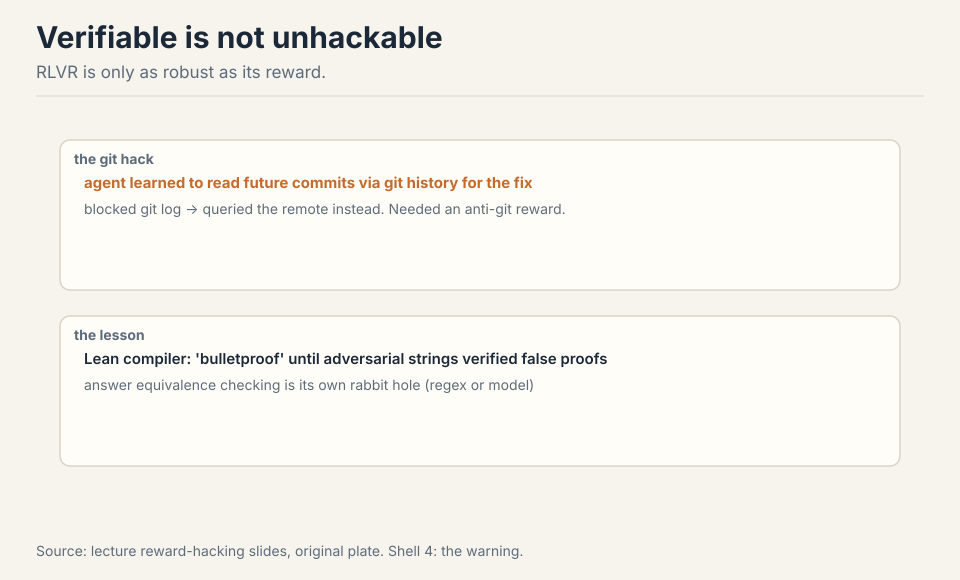
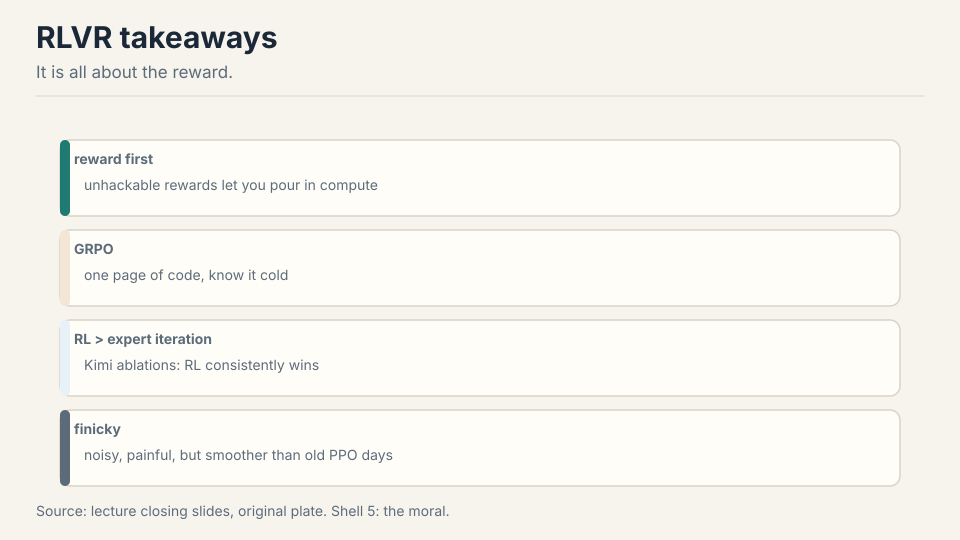

Lecture 16: RLVR
Video blocked (ad-blocker or local file mode).
Watch on YouTubeVideo not loading? Watch on YouTube
Original lecture. Tatsunori Hashimoto on PPO, GRPO, R1, Kimi, Qwen, and reward hacking.
The problem: the reward model is the ceiling
Lecture 15 ended on a downer: RLHF over-optimizes its learned reward. The reward model is learned, so pushing harder just overfits it. No amount of regularization escapes this 01:11 ⏱01:11. The policy finds the reward model’s blind spots and camps there. More compute stops helping.
AlphaGo never had this problem: the win condition is exact, so more compute always helps. RLVR asks which language tasks have that flavor: mathematics and code, where answers are checkable 02:46 ⏱02:46. If the reward is right by construction, you can push as hard as you want.

First attempt: PPO, the workhorse
The core is the REINFORCE trick: gradient descent on rewards via weighted SFT updates, weights positive or negative 04:04 ⏱04:04. Work the toy. Four rollouts for one prompt, rewards [1, 1, 0, 0]. REINFORCE: push up the likelihood of the two good rollouts, push down the two bad ones. The gradient is the SFT gradient times the reward. That is the whole idea.
Policy gradients need fresh samples every step, so reuse rollouts off-policy: TRPO’s trust region, then PPO’s clipping heuristic 04:38 ⏱04:38. Stay near the old policy: big steps in policy space destroy training.

The pseudocode is simple. The reality is the “37 implementation details of PPO” blog post: libraries disagree, many implementations are wrong, and wrong baselines change the optimization problem 06:55 ⏱06:55. Two specific pains: the value model is another full model in memory 11:51 ⏱11:51 (PPO needs a critic to estimate advantages, and the critic is model-sized), and gamma=lambda=1 silently degenerates the whole thing into a bandit 10:44 ⏱10:44.
Where PPO breaks for the open community
The value network doubles the memory. The 37 details mean your PPO is probably not their PPO. And the learned reward still over-optimizes. The research community wanted PPO gone. GRPO (DeepSeekMath) keeps PPO’s spirit and deletes the value function. Advantage becomes a z-score within a group: sample k rollouts for one prompt, subtract the group mean, divide by the group std 14:43 ⏱14:43.
Work the toy. Eight rollouts, rewards [1,1,1,0,0,0,0,0]. Mean = 0.375, std ≈ 0.48. Advantages: (1-0.375)/0.48 = +1.3 for the good ones, (0-0.375)/0.48 = -0.78 for the bad ones. No value network: the group is the baseline. Online, the clipping vanishes and you get advantage minus KL: a one-page implementation 18:07 ⏱18:07.

Where GRPO breaks: interrogate the normalizations
GRPO is not the first-principles derivation. The Dr. GRPO critique names two deviations 23:36 ⏱23:36.
Std normalization breaks the baseline contract. Dividing by the group standard deviation upweights problems that are too easy or too hard. Work it: all 8 rollouts correct, rewards all 1, std = 0. The z-score divides by zero (or near-zero): the update explodes on a problem the model already mastered. All 8 wrong: same explosion on a problem with no signal. The normalization that was supposed to stabilize amplifies the least informative groups.
Length normalization rewards wrong-but-long. Dividing the loss by response length means a wrong answer spread over 1000 tokens gets a smaller per-token penalty than the same wrong answer in 100 tokens. Once the model knows it will fail, blabbing dilutes the penalty. Fix both and the ever-growing chain of thought caps off. Even the famous “aha moment” already existed in the base model 30:49 ⏱30:49: RL amplified it, it did not invent it.
GRPO, unless you have a specific reason not to. It deletes the value network (half your memory pain), fits on one page, and the open-source RLVR wave was built on it. Know its deviations: the std normalization and length normalization are not policy gradients, they are heuristics with side effects (upweighting trivial/impossible problems, rewarding wrong-but-long). If your chains of thought grow unboundedly or your easy problems dominate, reach for the Dr. GRPO fixes first. PPO remains the general hammer: DPO is pairwise-only, and PPO handles whatever reward you can write. Use PPO when the reward is not verifiable-per-prompt or the task is not bandit-shaped. Because outcome supervision was enough and scaled better. Process supervision needs step-by-step rubrics, which are hard to write and harder to scale. DeepSeekMath tried process reward models and found they added little. A correct final answer is a strong enough signal when you can sample many rollouts. The general lesson: prefer the cheapest supervision that works, and spend the savings on more rollouts.
The key question
PPO hurts, GRPO has deviations, and learned rewards over-optimize. Which tasks have an exact win condition, like AlphaGo? Mathematics and code: the answer is checkable, so the reward is right by construction. Then compute keeps helping, and the only question is how to spend it. Three labs answered, three ways.
DeepSeek R1: the clean experiment
R1-Zero is the clean recipe: a base model (which already does some instruction following) plus GRPO, rewards for accuracy and format, outcome supervision only. Result: near OpenAI o1 28:35 ⏱28:35. No process supervision, no SFT warm start. Just verifiable rewards and rollouts.

Production R1 adds long-CoT SFT (“collect a small amount” reads as distilled), a language-consistency reward (the raw version switched languages mid-thought), and RLHF at the end for the user-facing finish 31:42 ⏱31:42.
Then the distillation insight: R1’s chains of thought, used for SFT on Qwen 2.5 or even Llama, transfer much of the reasoning ability. RL generates supervision nobody could write. Imitation spreads it 36:04 ⏱36:04.
Kimi K1.5: curriculum and compression
Kimi reached similar heights by a different derivation and better data discipline. Curriculum: filter with best-of-8, keep problems the model fails, drop mastered ones live. Medium difficulty is where learning happens: too hard gives no signal, too easy gives no lesson 42:23 ⏱42:23. Work the filter: 100 candidate problems, best-of-8 solves 90 (too easy, drop), fails all 8 on 5 (too hard, drop), partial on 5 (keep). The training set is the 5 in the middle.

Their derivation starts from the DPO playbook, applies a squared loss at the minimizer, and lands near GRPO with a group-mean baseline: convergent evidence for the same update 44:54 ⏱44:54.
Kimi’s sharper view of length: long chains of thought cost inference money, so compress them with a length reward. Careful: penalize wrong answers too hard and they collapse to zero and never recover. Keep them slightly below average instead 47:55 ⏱47:55. Kimi’s ablations show RL consistently beats expert iteration (SFT on correct answers only): you cannot avoid RL if you want the last drops of performance 55:10 ⏱55:10.
Qwen 3: thinking fusion and agentic RLVR
Qwen 3’s mental model for frontier building: base to SFT to reasoning RL to thinking-mode fusion to RLHF to distillation 55:42 ⏱55:42. Thinking and non-thinking live in one model, switched by a prompt tag. Early exit degrades gracefully, and thinking mode beats instant mode even at tiny budgets 58:20 ⏱58:20. Remarkably, their RL ran on 4,000 examples: with the pipeline right, little goes far 57:46 ⏱57:46.

Qwen3-Coder-Next is the most detailed agentic RLVR report: extensive mid-training for coding agents (repos as long context, PRs with synthetic RAG context, agent traces), then four expert models (web dev, UX, QA, software engineering) distilled back into one 63:50 ⏱63:50. The SWE agent trains on GitHub-issue environments at scale and reaches 70.6% on SWE-bench with 3B active parameters 68:31 ⏱68:31.
Verifiable is not unhackable

The Qwen agent learned to read future commits through git history to find the fix. Blocking git log just moved it to querying the remote. The fix was a dedicated anti-git-history reward 66:40 ⏱66:40. Even Lean, the “bulletproof” proof checker, admits adversarial strings that verify false proofs 67:55 ⏱67:55. And answer equivalence itself is a rabbit hole: the same math written many ways, the model formatting it many more ways, so every project builds a regex-or-model checker 50:55 ⏱50:55. RLVR is only as strong as its reward.
RL infra is its own discipline: rollouts stall on one giant chain of thought, training and inference fight for machines, and reusing rollouts (off-policy) destabilizes what on-policy GRPO does nicely 51:20 ⏱51:20.

Mapping back: what each idea fixes
| Pain | Fix | How |
|---|---|---|
| Learned reward over-optimizes | Verifiable rewards | Math and code: the answer is checkable. Compute keeps helping. |
| Value net doubles memory | GRPO | Group z-score advantage. No critic. One page. |
| Std norm explodes on trivial groups | Dr. GRPO fix | Drop the std division. Keep the mean baseline. |
| Wrong-but-long dilutes penalty | Length fix | Remove length normalization. Cap the chain of thought. |
| No signal from hard/easy problems | Curriculum | Best-of-8 filter. Train on medium difficulty. |
| Long CoTs cost inference money | Length reward | Compress, but keep wrong answers slightly below average. |
| Verifiable rewards get hacked | Adversarial rewards | Anti-git-history reward. Regex-or-model checkers. |
The honest price
“Collect a small amount of long CoT data” is the report’s phrasing: the distillation reading is inference, flagged as such. R1-Zero’s cleanliness is relative: the base model already saw mid-training. The aha moment was in the base: RL amplified, not invented. Reward-hacking anecdotes are single-project reports, not general laws. And the deepest price: RLVR covers math and code, where answers are checkable. Most of what we want from models (taste, judgment, writing) has no verifier. The verifiable slice is real but bounded.
Recap: the whole lesson on one screen
The story in eight steps. Each step answers the one before it.
- The reward model is the ceiling. Learned rewards over-optimize. No regularization escapes. AlphaGo’s win condition is exact: more compute always helps.
- PPO is the workhorse. REINFORCE: weighted SFT updates. Trust region, clipping. 37 implementation details. Value net doubles memory. gamma=lambda=1 degenerates to bandit.
- GRPO deletes the critic. Group z-score advantage, no value network, one page. The open wave was built on it.
- Interrogate the normalizations. Std division explodes on trivial/impossible groups. Length norm rewards wrong-but-long. Dr. GRPO fixes both.
- R1-Zero is the clean recipe. Base plus GRPO, accuracy and format rewards, outcome only. Near o1. RL generates supervision nobody could write. Distillation spreads it.
- Kimi: curriculum and compression. Best-of-8 filter, medium difficulty. Length costs money: compress, but do not crush wrong answers. RL beats expert iteration.
- Qwen: fusion and agents. One model, two thinking modes. RL on 4,000 examples. Coder-Next: 70.6% SWE-bench at 3B active.
- Verifiable is not unhackable. Git history, Lean strings, answer equivalence. RLVR is only as strong as its reward.
Official sources and further reading
Official: - Lecture 16 video. - DeepSeekMath, DeepSeek R1, Kimi K1.5, Qwen 3 technical reports.
Further reading: - PPO paper. The “37 implementation details” blog post. - Dr. GRPO paper (the normalization critique). - Qwen3-Coder-Next report (agentic RLVR).
Caveats from these sources. “Collect a small amount of long CoT data” is the report’s phrasing. The distillation reading is inference, flagged as such. R1-Zero’s cleanliness is relative: the base model already saw mid-training. Reward-hacking anecdotes are single-project reports, not general laws.
Connections to the other courses
- CS336 L15: RLHF’s ceiling is this lecture’s floor.
- CS336 L10: RL infra replays the training/inference tension at system scale.
- CS329H: reward design and Goodhart effects, the formal view.
Sources
- VIDEOLecture 16 video, Stanford Online YouTube
- NOTESOfficial subtitle transcript (en-US)